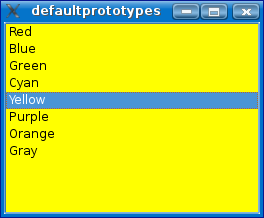

Default Prototypes Example
This Qt Script example shows how to use default prototypes to make a non-QObject-based type scriptable.

With QScriptEngine::setDefaultPrototype() you can specify a Qt Script object that defines a scripting interface for a C++ type; Qt Script operations on values of such types will then be delegated to your prototype object. In this example, a simple scripting interface for QListWidgetItem is defined, so that the text of items can easily be accessed from script code.
To define a scripting API for QListWidgetItem in terms of Qt properties and slots, we subclass QObject and QScriptable.
class ListWidgetItemPrototype : public QObject, public QScriptable { Q_OBJECT Q_PROPERTY(QString text READ text WRITE setText) public: ListWidgetItemPrototype(QObject *parent = 0); QString text() const; void setText(const QString &text); public slots: QString toString() const; };
A single property, text, is defined, along with a slot, toString.
ListWidgetItemPrototype::ListWidgetItemPrototype(QObject *parent) : QObject(parent) { } QString ListWidgetItemPrototype::text() const { QListWidgetItem *item = qscriptvalue_cast<QListWidgetItem*>(thisObject()); if (item) return item->text(); return QString(); } void ListWidgetItemPrototype::setText(const QString &text) { QListWidgetItem *item = qscriptvalue_cast<QListWidgetItem*>(thisObject()); if (item) item->setText(text); } QString ListWidgetItemPrototype::toString() const { return QString("ListWidgetItem(text = %0)").arg(text()); }
The implementation of the property accessors use the qscriptvalue_cast() function to cast the script object to a QListWidgetItem pointer. The normal C++ QListWidgetItem API is then used to implement the desired functionality.
Although not shown here, it is possible to throw a script exception from a prototype function; for example, you could throw a TypeError exception if the qscriptvalue_cast() fails.
QListWidgetItems are usually added to a QListWidget. While QListWidget is a QObject-based class, not all the functionality needed for this example are present. We can solve this by creating a default prototype for the QListWidget class as well. The prototype will augment the functionality already provided by the Qt Script QObject integration; i.e. if a property or slot is not found in the QListWidget object itself, the prototype will be used as a fallback.
class ListWidgetPrototype : public QObject, public QScriptable { Q_OBJECT public: ListWidgetPrototype(QObject *parent = 0); public slots: void addItem(const QString &text); void addItems(const QStringList &texts); void setBackgroundColor(const QString &colorName); };
The additional slots will make it possible to add items to a QListWidget from script code, and to set the background color of the widget from a string.
ListWidgetPrototype::ListWidgetPrototype(QObject *parent) : QObject(parent) { } void ListWidgetPrototype::addItem(const QString &text) { QListWidget *widget = qscriptvalue_cast<QListWidget*>(thisObject()); if (widget) widget->addItem(text); } void ListWidgetPrototype::addItems(const QStringList &texts) { QListWidget *widget = qscriptvalue_cast<QListWidget*>(thisObject()); if (widget) widget->addItems(texts); } void ListWidgetPrototype::setBackgroundColor(const QString &colorName) { QListWidget *widget = qscriptvalue_cast<QListWidget*>(thisObject()); if (widget) { #ifdef Q_WS_MAEMO_5 QString style = QString("QListWidget::item {background-color: %1;}").arg(colorName); style += "QListWidget::item {selection-color: black;}"; widget->setStyleSheet(style); #else QPalette palette = widget->palette(); QColor color(colorName); palette.setBrush(QPalette::Base, color); widget->setPalette(palette); #endif } }
Again, we use qscriptvalue_cast() to cast the script object to the relevant C++ type, in this case a QListWidget pointer. The addItem() and addItems() functions simply forward their arguments to the corresponding functions in the QListWidget class. setBackgroundColor() gets the widget's palette, creates a QColor from the given string argument and changes the palette accordingly.
Q_DECLARE_METATYPE(QListWidgetItem*) Q_DECLARE_METATYPE(QListWidget*)
The relevant C++ types must be made known to Qt's meta type system.
QScriptEngine engine;
ListWidgetItemPrototype lwiProto;
engine.setDefaultPrototype(qMetaTypeId<QListWidgetItem*>(),
engine.newQObject(&lwiProto));
ListWidgetPrototype lwProto;
engine.setDefaultPrototype(qMetaTypeId<QListWidget*>(),
engine.newQObject(&lwProto));
For each type that we want to associate a prototype object with, we create an instance of the prototype class, pass it to QScriptEngine::newQObject(), and then create the link between the C++ type and the resulting script object by calling QScriptEngine::setDefaultPrototype().
QListWidget listWidget;
engine.globalObject().setProperty("listWidget",
engine.newQObject(&listWidget));
In this example, a single QListWidget object is added as a global script variable, called listWidget. Script code can add items to this widget by calling addItem() or addItems().
listWidget.addItem("Red"); listWidget.addItem("Blue"); listWidget.addItem("Green"); listWidget.addItem("Cyan"); listWidget.addItem("Yellow"); listWidget.addItem("Purple"); listWidget.addItems(["Orange", "Gray"]);
Script code can connect to signals of the QListWidget object; signal handlers can use the interface defined in the QListWidgetItem prototype to manipulate item arguments.
listWidget.currentItemChanged.connect( function(item) { listWidget.setBackgroundColor(item.text); } );
Not shown in this example is how to make QListWidgetItem constructible from Qt Script code, i.e. to be able to write "new QListWidgetItem()" in a script. In order to do this, you have to define your own script constructor for the type. The constructor would just be a factory function that constructs a new C++ QListWidgetItem and returns it back to the script. See QScriptEngine::newFunction() for more information.
Files: